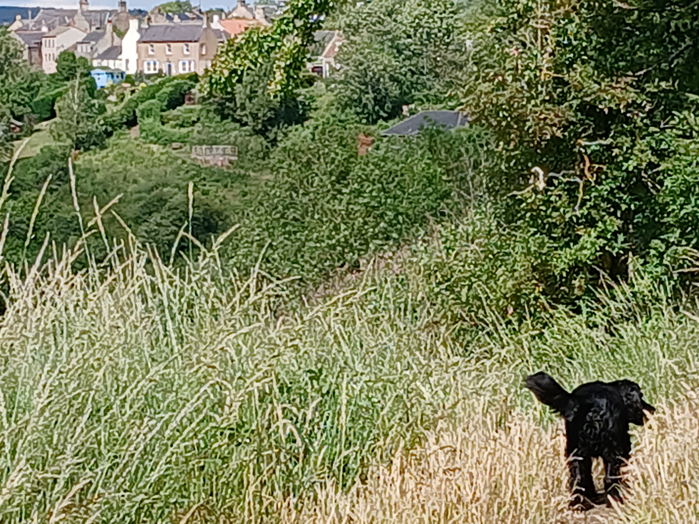
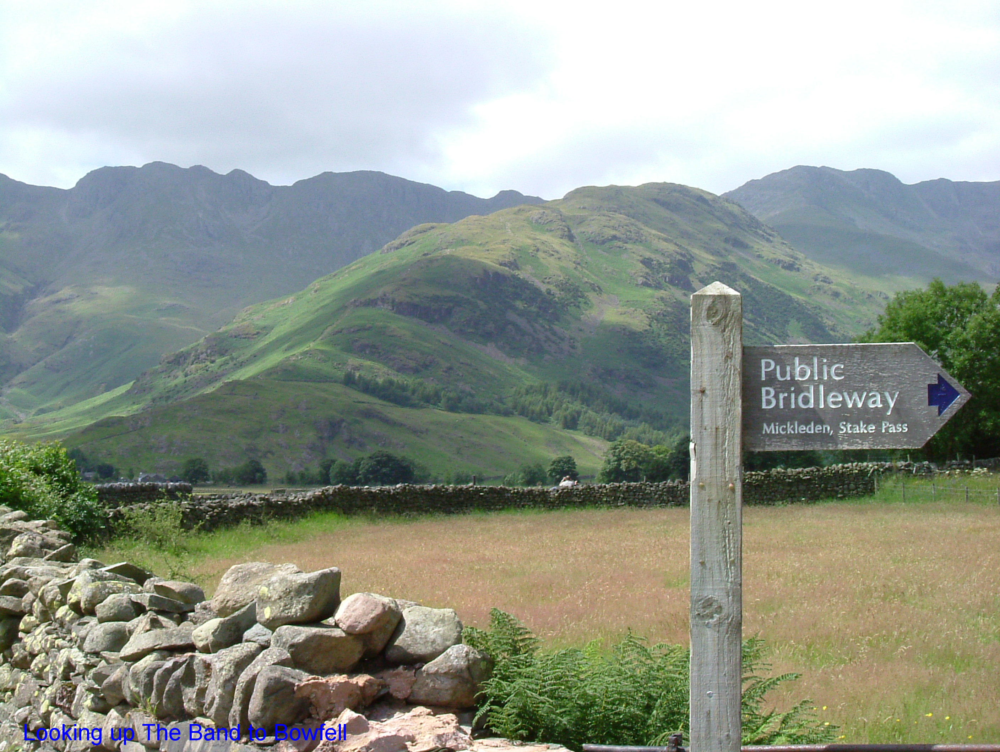
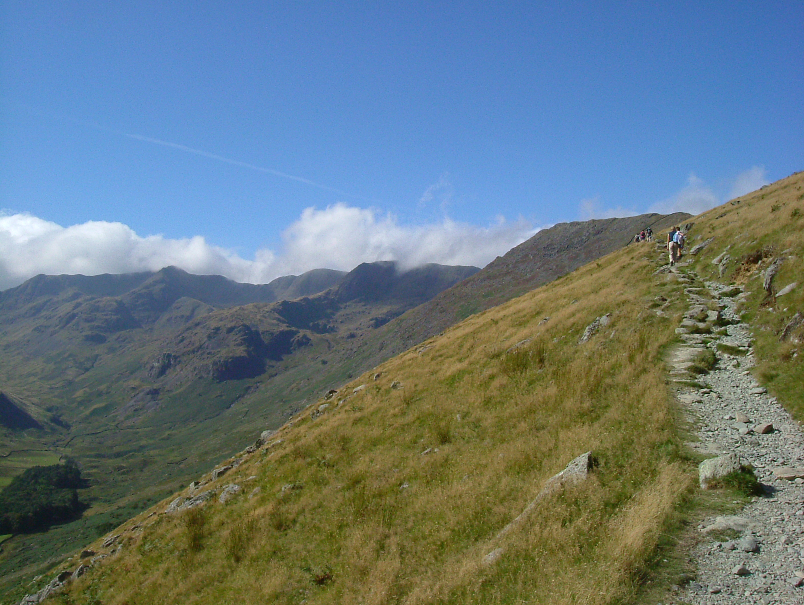
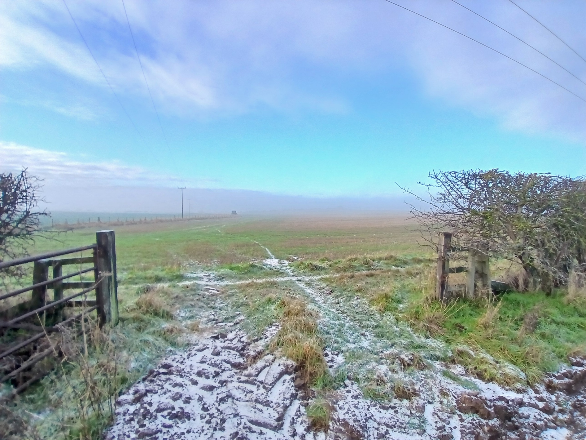
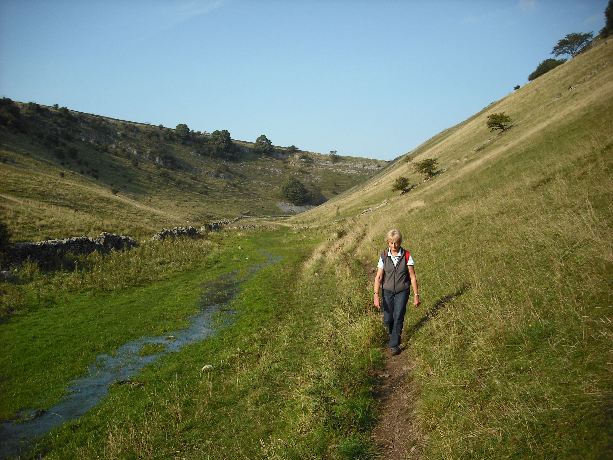

Path to photo set
A path is often a choice for me to take a photo, it is a guideline similar to form and frames perspective views in itself. As an image in front of you when walking and taking in the view you get to thinking about it mixed with the emotions of the journey. Just by looking and feeling it match the landscape you are in you get from it a powerful frame.
As trailtour, a website offering hillwalking/climbing services and themed to make art with the associated brightcalmillustrations I am pleased to share the path as a concept of symbol and image and artistic perspective in a photo.
There are no end of photos you have probably taken of the outdoors and I think you too will have enjoyed the line taken or beckoning as alluring like a picture.
Please click on any photo to move it to the main frame and with a description




